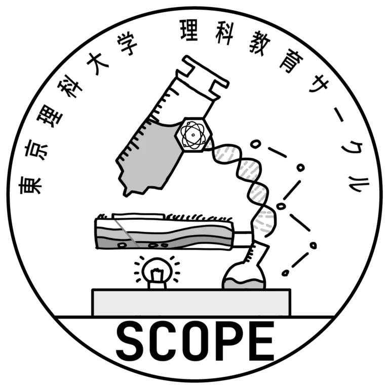

04 — REAL WORLD
身のまわりの圧力
圧力の知識は日常のあちこちで使われています。
※ カードをタップすると写真と解説が表示されます。
自転車の空気入れ
ピストンで空気を圧縮して圧力を高め、タイヤへ送り込みます。
スプレー缶
中身が高圧で充填されています。熱すると圧力が上がり破裂の危険があります。
天気予報の低気圧
周囲より気圧が低い領域。空気が流れ込んで上昇し、雲ができます。
真空パック
袋の中の空気を抜くと、外側の大気圧が袋を押さえつけて密着します。

PRESSURE & MOLECULES
空気には、モノをぐっと押す力があります。飛行機に乗ったとき、耳がキーンと痛くなるのも、空気の力で押されているからなのです。この力のことを『圧力』と言います。今回は、そんな圧力を、一緒に見ていきましょう。
START ↓空気は何もないように見えますが、実は小さな粒（分子）がものすごい速さで飛び回っています。
この粒たちが壁にぶつかるたびに、壁を押す力が生まれます。この「たたく力の合計」が圧力です。
粒が多くぶつかるほど、または速くぶつかるほど、圧力は大きくなります。
青い丸が空気の粒を表しています。
シミュレーションで起きていたことを2つのグラフで確認しましょう。
空気を1回押すごとに圧力は一定量ずつ増える（比例関係）。大気圧（101.3 kPa）を切片として、グラフは右肩上がりの直線になります。
空気を圧縮して入れると温度がわずかに上昇します。容器の体積が一定なら、圧力と温度は比例します（ゲイ＝リュサックの法則）。
圧力の知識は日常のあちこちで使われています。
※ カードをタップすると写真と解説が表示されます。
ピストンで空気を圧縮して圧力を高め、タイヤへ送り込みます。
中身が高圧で充填されています。熱すると圧力が上がり破裂の危険があります。
周囲より気圧が低い領域。空気が流れ込んで上昇し、雲ができます。
袋の中の空気を抜くと、外側の大気圧が袋を押さえつけて密着します。